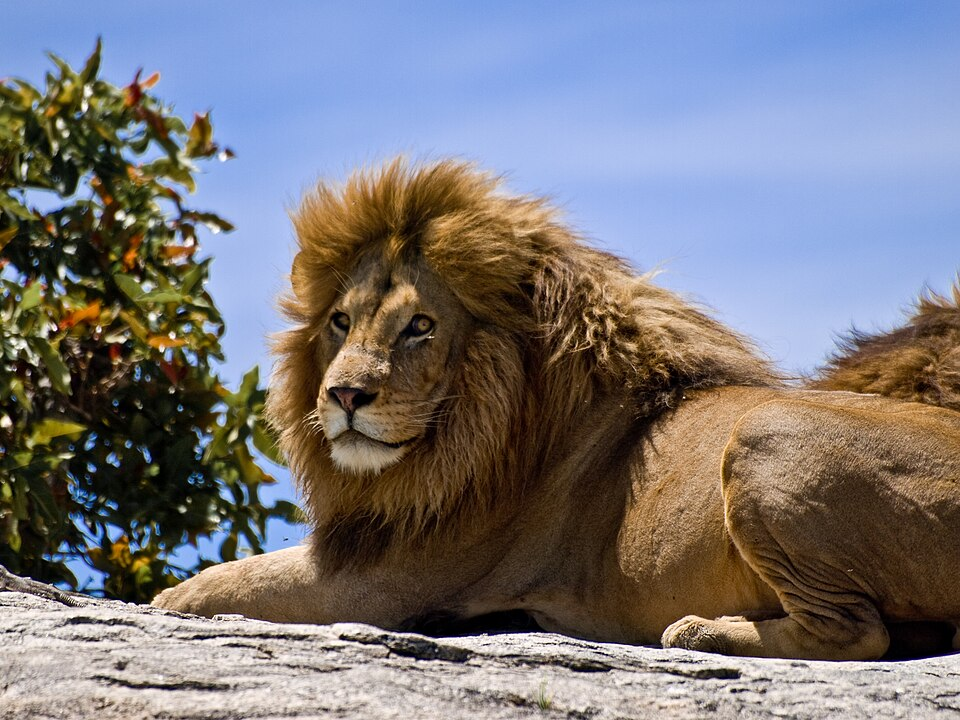
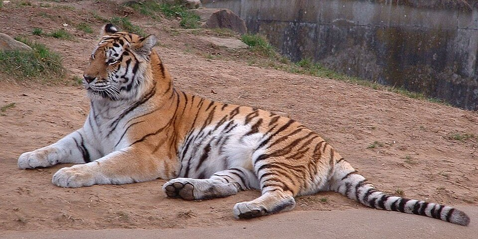
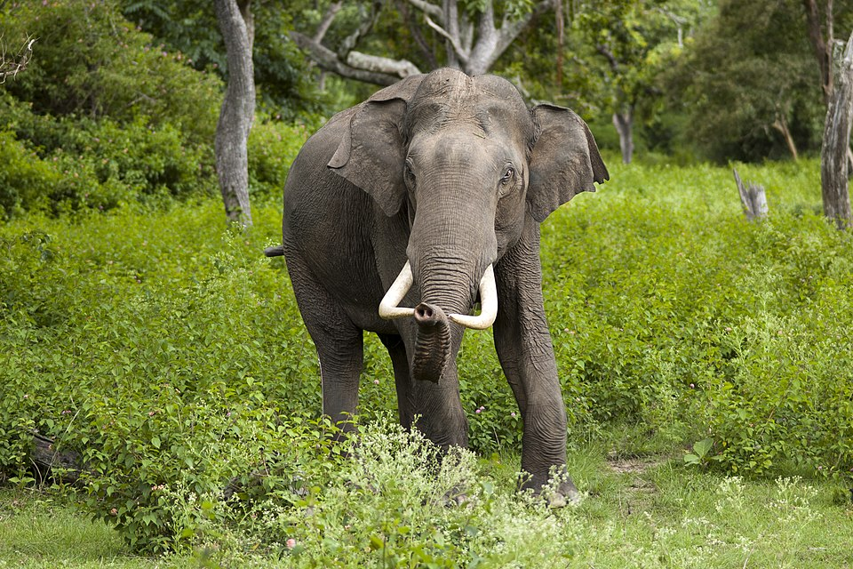
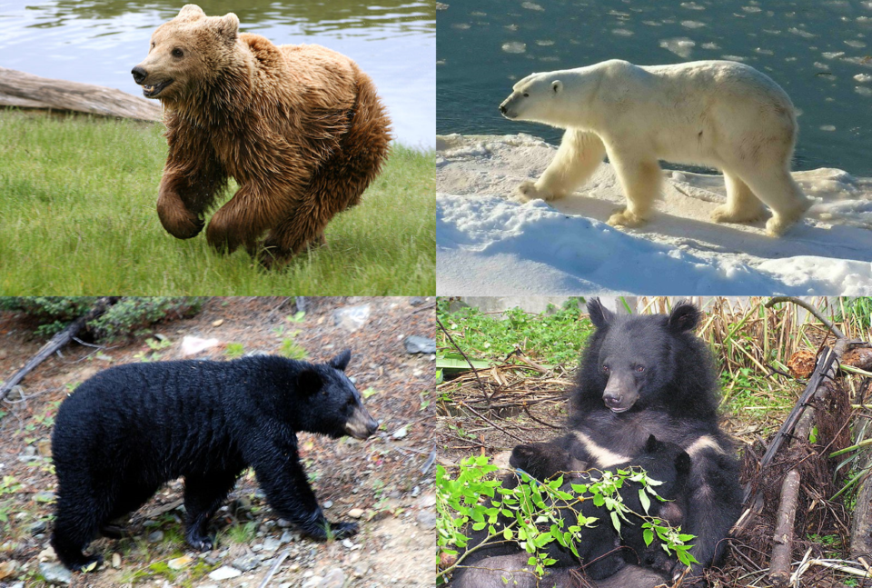

ფეხბურთი
კრისტიანუმ ცოლი მოკლა.
ლომი არის ძლიერი და ამაყი მტაცებელი.
ვეფხვი მსოფლიოში ერთ-ერთი ყველაზე ლამაზი მტაცებელია.
სპილო დიდი და მშვიდობიანი ცხოველია.
მგელი ცხოვრობს ხროვებით და ძალიან ჭკვიანია.

დათვი ძუძუმწოვრების ძალის სიმბოლოა.
კრისტიანუმ ცოლი მოკლა.
პარაგრაფი 1
პარაგრაფი 2
პარაგრაფი 3
პარაგრაფი 4
პარაგრაფი 5
პარაგრაფი
პარაგრაფი
პარაგრაფი
პ1
პ2
პ3
პ4
პ5